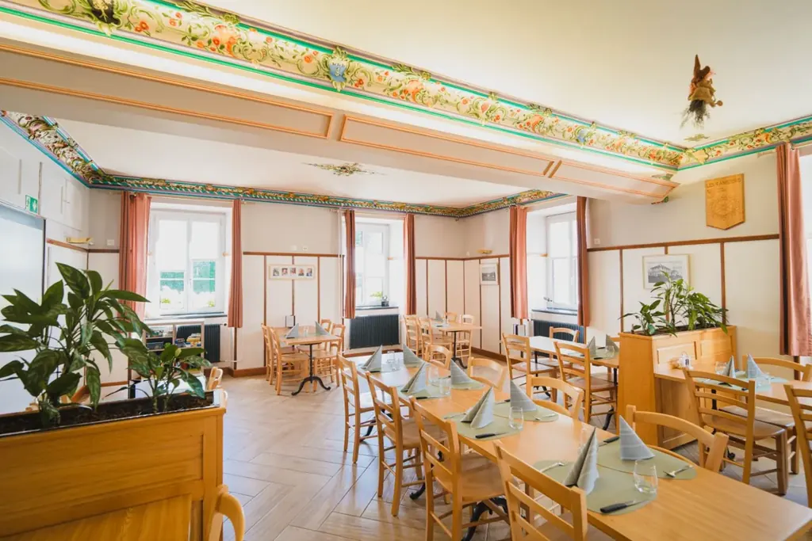
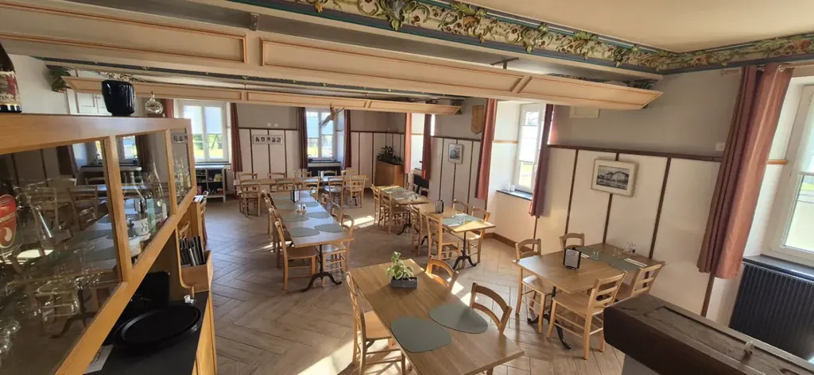
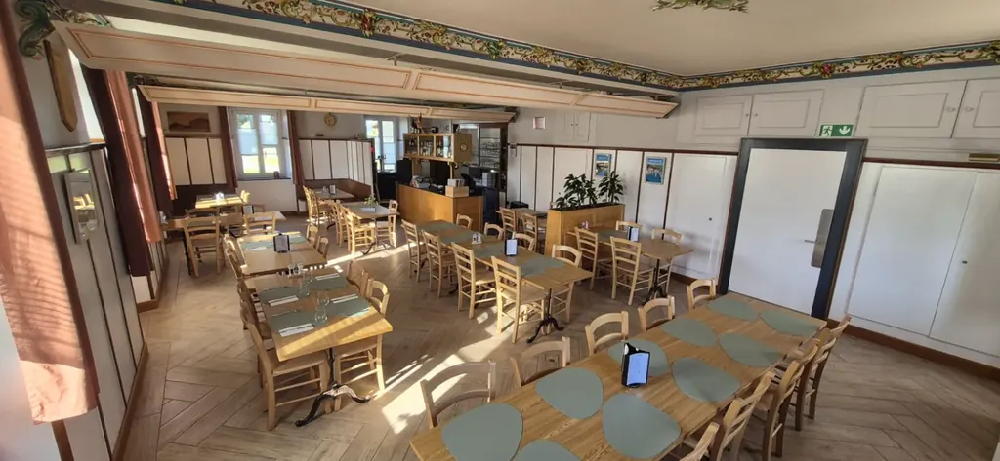

Mariages
Dîner sous les plafonds peints, nuit au col pour les proches, photos dans les pâturages et devant la façade fleurie.

Mariages, anniversaires, repas de famille, séminaires et sorties de groupe : la maison met ses salles, sa cuisine et ses chambres à votre service.
Frises peintes à la main, boiseries et grandes fenêtres sur les pâturages : un décor d’auberge historique, à habiller selon vos envies.



Dîner sous les plafonds peints, nuit au col pour les proches, photos dans les pâturages et devant la façade fleurie.

Menu de groupe, terrasse aux beaux jours, places de jeux et swingolf pour occuper les enfants.
Deux salles de conférence équipées, pauses et repas au restaurant, tir à l’arc ou swingolf pour souder l’équipe.
L’agenda 2026 de la maison sera bientôt disponible. En attendant, les grands moments du Jura à vivre depuis le col :
Quelques informations suffisent : nous revenons vers vous avec une proposition de salle, de menu et, si besoin, de chambres.
Ou appelez directement la maison au 032 426 66 56.
Votre demande est prête. Envoyez-la depuis votre messagerie, ou copiez-la vers lacaquerelle@bluewin.ch.
La salle du restaurant compte 80 places et une seconde salle 25 places. Deux salles de conférence équipées (wifi, projecteur, écran) complètent l’ensemble.
Dès 10 personnes, vous choisissez une entrée, un plat et un dessert parmi nos propositions de groupe ; le même menu est servi à tous. La réservation se fait au moins 7 jours à l’avance.
Oui, l’hôtel compte 9 chambres doubles, à trois lits et familiales. Pour bloquer plusieurs chambres, indiquez-le dans votre demande.